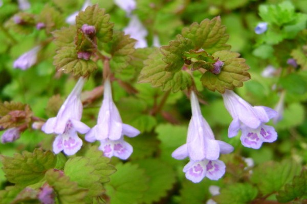
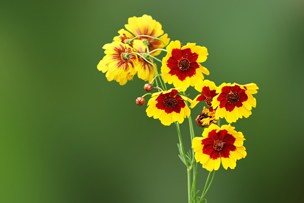
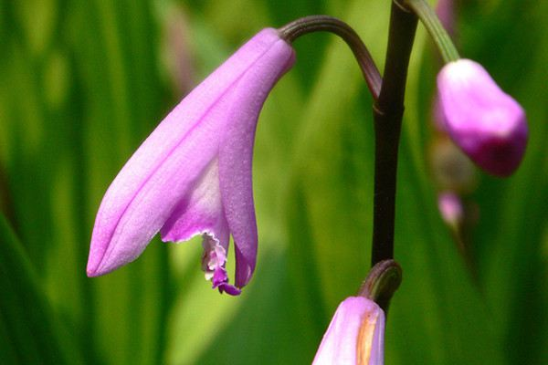
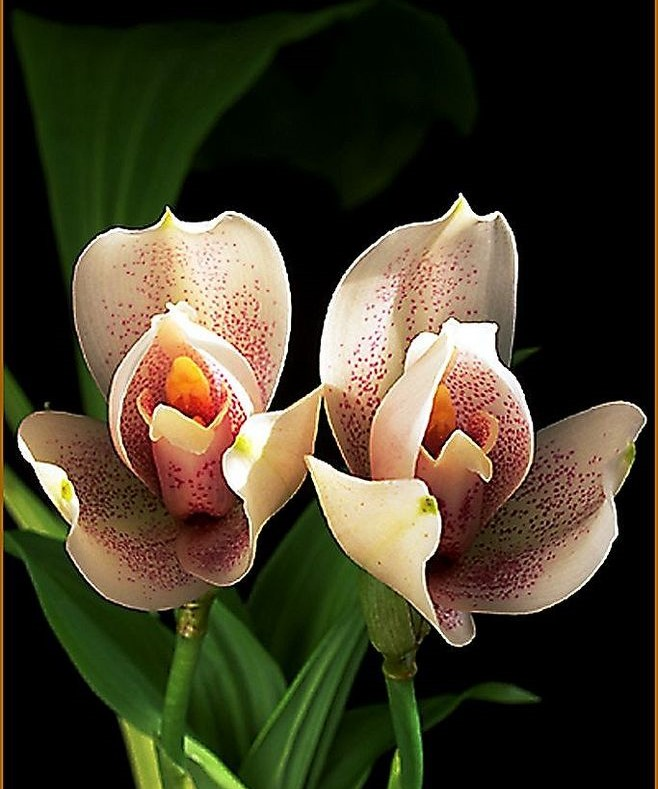

活血丹的别称，可以说说非常多的，它的别名有遍地香、地钱儿、钹儿草.活血丹比较喜欢阴湿的环境，对土壤的要求不高，一般是疏松肥沃的排水性良好的土壤比较适合生长。它比较喜欢温暖湿润的气候。生命力比较顽强，不需要过多的修剪。活血丹的花语是留心，它表示留心沿途的美景。
蛇目菊，也叫小波斯菊、金钱菊、孔雀菊。蛇目菊比较喜欢光照充足的环境，在凉爽的气候下生长的会比较好，它耐寒的能力很强。对土壤要求不高，一般的土壤都可以，瘠薄一点也无所谓，但是太过肥沃的土壤植株容易徒长的。蛇目菊的观赏性高，所以它的主要的作用就是原来作用，将其作为地被植物进行养殖，会有比较好的效果，也适合作为切花来观赏的。蛇目菊的花语就是恳切的喜悦。
朱兰，也有别名为斩龙剑、双肾草、祖师箭、青蛇剑、白岌兰、紫兰、朱兰、白芨兰、白芨、连及草、甘根、白给、箬兰、紫蕙、百笠、白及。朱兰喜欢温暖并且湿润的生长环境，可以耐寒，但是冬季的时候最好是室内过冬。并且，它的耐阴性比较强，怕强光直射。在夏季的时候怕高温和干旱，容易叶子发黄。选择土壤的时候一般是选择排水性良好的腐殖质土壤。朱兰也有一些相关的品种，它的同属物种包括小朱兰、云南朱兰、朱兰。而相关变种则有变种白花白及，开白色的花朵。
中国兰、春兰、兰草、兰华、幽兰、山兰、国香、空谷仙子、香祖。兰花喜欢阴凉的环境，怕阳光直射。养护尽量放在半阴处，有散射光即可。
兰花喜欢湿润的环境，忌干燥，平时要经常通风。肥沃的土壤可以让兰花生长的更加健壮，选用肥沃、富含腐殖质的土壤。
观赏：“泣露光偏乱，含风影自斜；俗人那斛比，看叶胜看花”。这首诗用来形容兰花的叶子婀娜多姿之美。在家中放上几盆兰花，点缀居室，顿时生意盎然，花开之时，清香阵阵。食用：兰花的花香醇正，可用于茶或者做汤菜。兰花一般形容人君子，常形容女人空谷幽兰。兰花的花语：淡泊、高雅，美好、高洁、贤德。